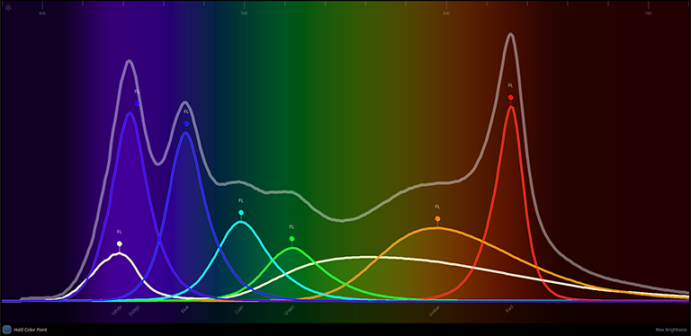
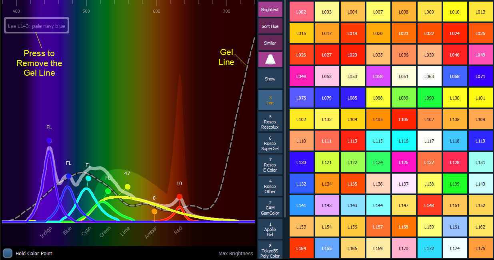

The Spectrum option is found by clicking on the display configuration tool (the gear icon) in the upper left corner of the color picker display.
This option displays all the color parameters across the color spectrum, and allows for individual control of each parameter. Press a color point to move it.
This display is a good visual of what the fixture is outputting.
The following screenshots show a 7 color fixture. This display will change based on the type of fixture being used.
Note: The grey line shows the composite color of the fixture. If multiple fixtures are selected, the grey line represents the first channel selected.

With the Gel Picker open and a gel selected, a dotted line will appear in the Spectrum display. That line represents the selected gel.

{Hold Color Point} allows you to adjust individual emitters and the other emitters will automatically adjust to hold the color selected. This can only be used with fixtures that have more than three color parameters.